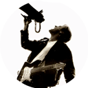

Novedades

El músico canadiense Bryan Adams volverá a pisar suelo español en noviembre de 2024,
ofreciendo cinco
conciertos en distintas ciudades como parte de su gira ‘So Happy It Hurts Tour’.
Se trata de su primera visita a nuestro país desde Febrero de 2022, cuando se
convirtió en el primer gran tour internacional que recaló en España tras las restricciones
de la pandemia.
Conocé los horarios y precios